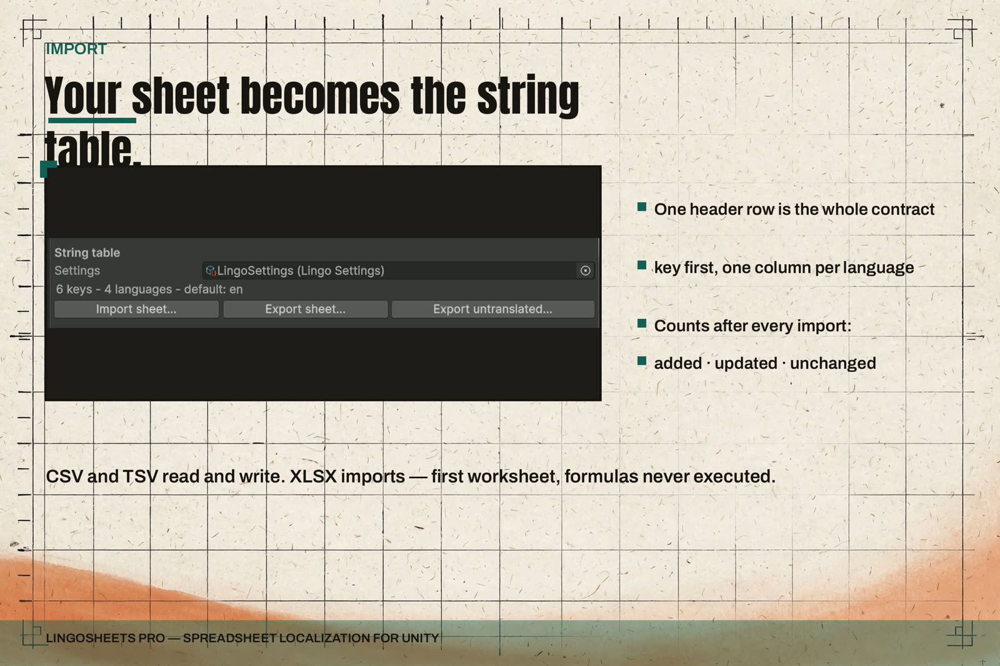

Import and Merge
The rule underneath everything
The sheet is the source of truth; the table is a build artifact. Strings enter only through import (or direct edits in the table inspector) and leave only through export. Import operates on a local file you choose. Nothing is fetched, and nothing refreshes on its own.

Starting an import
In the home window (Tools > ByteLura > LingoSheets Pro), click Import sheet and choose a .csv, .tsv, or .xlsx file. CSV and TSV go through the spreadsheet codec; XLSX goes through the read-only XLSX reader (first worksheet only — Sheet Format). All three formats land on the same grid, and the same merge path applies from there.
Merge semantics
Import merges into the active table. It never replaces the table wholesale.
- A key in the sheet that is not in the table is added.
- A cell whose value differs from the table is updated.
- A cell identical to the table is left unchanged.
- A key that exists in the table but not in the sheet is kept. It is listed in the import report, never deleted. Removing a row from your sheet is not a deletion instruction.
- Duplicate keys in the sheet: the last row wins, counted as a warning with its row number.
- Rows with an empty key, and comment rows starting with
#, are skipped and counted.
The import report
Every import ends with a plain-language report in the window's Table block. It states:
- The file name.
- How many keys were added, updated, and left unchanged.
- How many rows were skipped, and why.
- Warnings with row numbers, including unknown columns that were ignored and duplicate keys.
- How many keys in the table were not present in the sheet.
Example shape: "Imported hellotour.csv — 2 added, 1 updated, 30 unchanged, 0 skipped. 1 key in the table is not in this sheet."
Read the report before pressing Play. It is the record of exactly what the import changed, and it is the fastest way to catch a wrong file, a renamed column, or a translator's sheet saved in an unexpected layout.
Refusals
Some sheets are refused outright, with the reason shown in the window's status line:
- The first header cell is not
key. - A language column appears twice.
A refusal imports nothing. Fix the header (Sheet Format) and import again. A refusal is never a silent no-op.
Setup uses the same path
Run Setup builds the starter table by importing the embedded starter sheet through this same importer. There is no separate setup-only code path, so the first table in your project arrives by the exact route your own sheets will take.
Working habits that keep merges clean
- Keep one sheet as the source of truth per table, and import from that file.
- Keep keys stable. Renaming a key in the sheet adds a new key and leaves the old one in the table, listed in the report as not present in the sheet.
- Send translators the untranslated-only export (Export and Missing Reports) instead of a hand-trimmed copy, so what comes back merges without surprises.